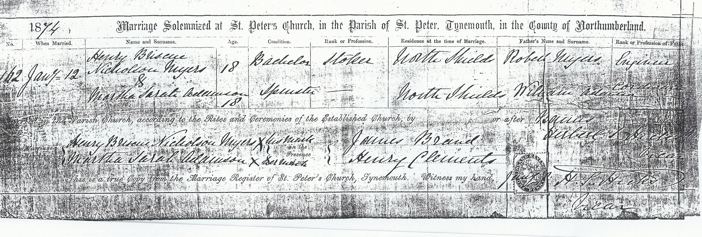
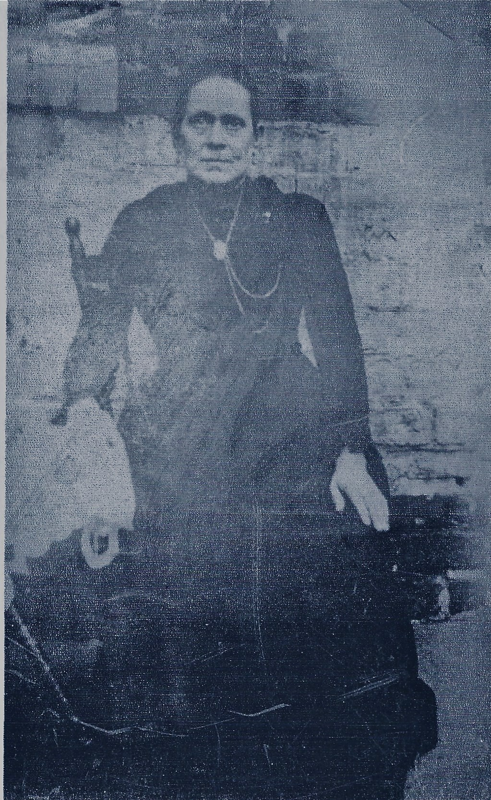
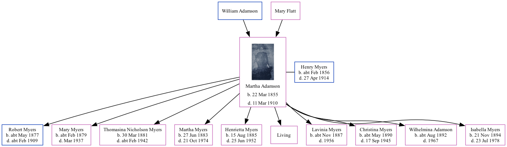

Martha Sarah Myers (née Adamson) 1855 - 1910
[ Home ] | [ Calendar ] | [ Surnames Index ] | [ Family History ]The daughter of William Adamson and Mary Flatt, Martha Adamson was born in North Shields, Northumberland, England on Mar 22, 1855<span class="citation">1,2,3</span> and married Henry Myers (a steamboat man with whom she had 10 children: <a href="I3037.html">Robert</a>, <a href="I3038.html">Mary Ann Nicholson</a>, <a href="I3048.html">Thomasina B Nicholson</a>, <a href="I3034.html">Martha Sarah Nicholson</a>, <a href="I3039.html">Henrietta Briscoe Nicholson</a>, <a href="I3040.html">Susanna Cranmer</a>, <a href="I3041.html">Lavinia Clements</a>, <a href="I3042.html">Christina Robertson</a>, <a href="I3043.html">Wilhelmina White Ridley Adamson</a> and <a href="I3044.html">Isabella Jane Nicholson</a>, along with 1 surviving child) at St Peters Church, Tynemouth, Tyne and Wear, England on Jan 12, 1874<span class="citation">4</span>.</p><p>Throughout her life, Martha lived in several places: at 2 South Street, North Shields, Tyne and Wear on Apr 3, 1881<span class="citation">5</span>; at 16 Appleby Street, North Shields, Tyne and Wear on Apr 5, 1891<span class="citation">6</span>; and at 48 Appleby Street, North Shields, Tyne and Wear on Mar 31, 1901<span class="citation">1</span>. <p>She died on Mar 11, 1910 in Tynemouth<span class="citation">3</span>.
Parents
Children
- Robert was born c. May 1877
- Mary Ann Nicholson was born c. Feb 1879
- Thomasina B Nicholson was born on Mar 30, 1881
- Martha Sarah Nicholson was born on Jun 27, 1883
- Henrietta Briscoe Nicholson was born on Aug 15, 1885
- Lavinia Clements was born c. Nov 1887
- Christina Robertson was born c. May 1890
- Wilhelmina White Ridley Adamson was born c. Aug 1892
- Isabella Jane Nicholson was born on Nov 21, 1894
Citations
- 1901 England, Wales & Scotland Census - Findmypast (was age 45 and the wife of the head of the household)
- England & Wales births 1837-2006 - Findmypast
- England & Wales deaths 1837-2007 - Findmypast
- England & Wales Marriages 1837-2005 - Findmypast
- 1881 England, Wales & Scotland Census - Findmypast (was age 26 and the wife of the head of the household)
- 1891 England, Wales & Scotland Census - Findmypast (was age 35 and the wife of the head of the household)
Media
Henry Briscoe Nicholson Myers and Martha Sarah Adamson - Marriage Certificate

Martha Sarah Adamson

1881 England, Wales & Scotland Census - GBC/1881/0023805815
England & Wales marriages 1837-2005 - BMD/M/1859/3/AZ/001347/031
England & Wales deaths 1837-2007 - BMD/D/1913/3/AZ/000631/121
1891 England, Wales & Scotland Census - GBC/1891/0029008405
1901 England, Wales & Scotland Census - GBC/1901/0032858286
England & Wales deaths 1837-2007 - BMD/D/1910/1/AZ/000259/368
Family Trees - FMP/1311850367
England & Wales births 1837-2006 - BMD/B/1855/2/AE/000017/019
England & Wales marriages 1837-2005 - BMD/M/1874/1/AZ/000004/301
England Marriages 1538-1973 - R_849486540/2
Family Tree
Generated by Ged2Site. Last updated on Jul 20, 2025